HGTector ver 0.1.7 Quick Start Guide
Qiyun Zhu, Katharina Dittmar
Checklist
Operating system: HGTector is cross-platform. It runs on Windows, Mac OS X and Linux. It may also run on other operating systems.
Perl: HGTector is written in Perl. It requires that you have a Perl interpreter installed in your system. The Perl interpreter is a standard component in most Mac OS X and Linux distributions. If you are a Windows user and you haven't installed it, you may download and install Strawberry Perl or ActivePerl.
R: Optionally, HGTector calls R to perform some advanced statistics and graphics. If you want to use these functions, you may install R, as well as Perl package Statistics::R. Please refer to the manual for instructions.
Input files
HGTector takes one or more protein sets (from one or more genomes) as input.
You can download whole genome annotation files: browse NCBI genome database, find genomes of your interest, and download the corresponding *.gbk files (GenBank format).
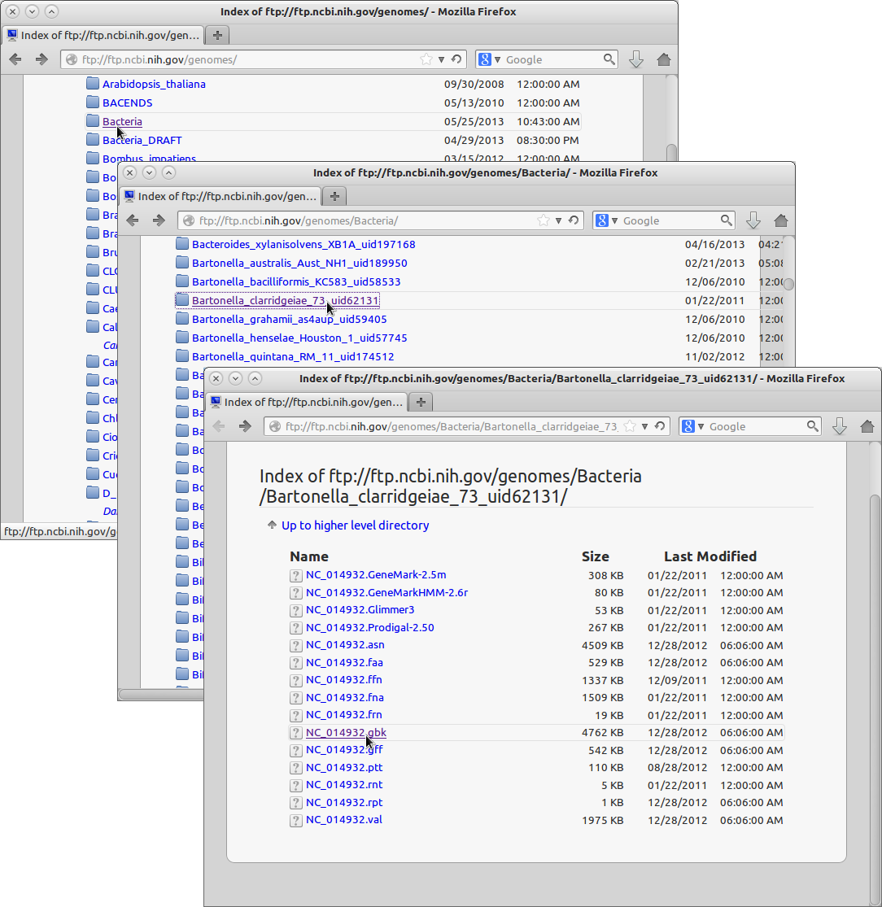
Or, you can download lists of protein records: search keywords in NCBI protein database, click "Send to:" - "File" - "Create File".
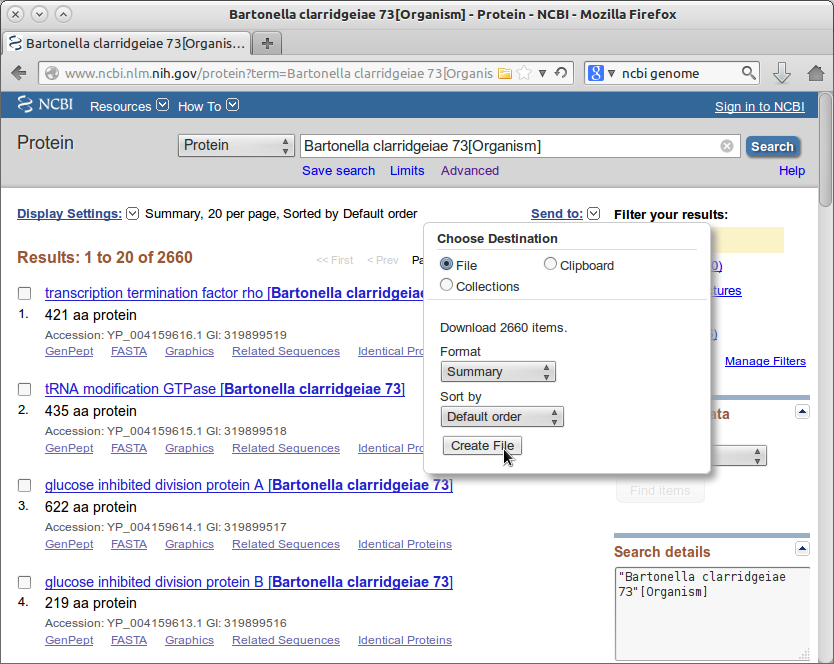
Or, you can prepare lists of protein accession numbers by yourself:
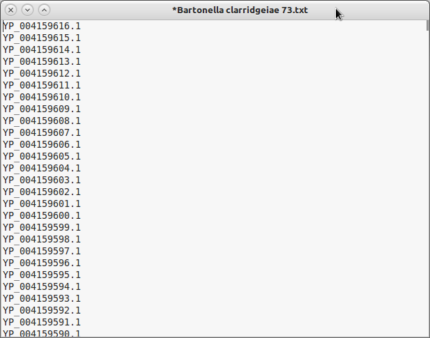
Create a folder to hold all input, intermediate and output files. This folder is your working directory.
In the working directory, create a folder named "input", place the input files inside this folder. You may rename them with brief and meaningful names.
Note: the fold name "input" is case sensitive. Same below.
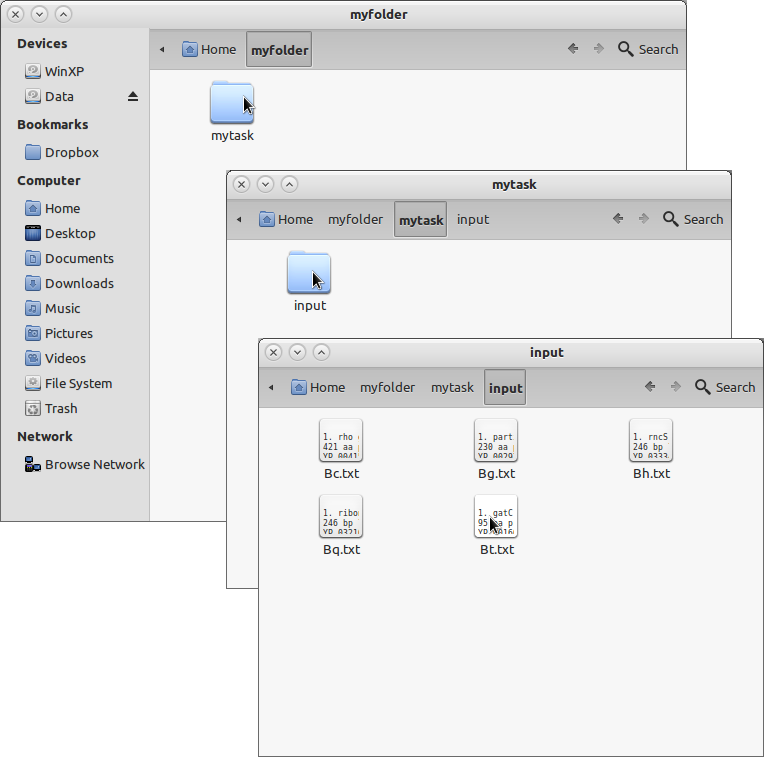
Configuring HGTector
The parameters of HGTector is control by a configuration file named "config.txt in the working directory. This file can be generated using the GUI, or you can manually create your own based on the template. If this file is omitted, the default parameters (as the template lists) will be used.
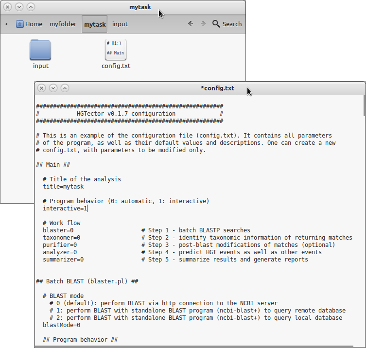
Both the GUI and the template explain the parameters and their possible values in detail. You can go through them to get an idea what they do.
Running HGTector
Despite having a GUI to generate config.txt, the HGTector program itself is written in Perl and only runs in terminal (command line mode). To launch terminal, you should:
Windows users: press Win+R, type "cmd", and click "OK".
Mac OS X users: navigate to "Applications/Utilities", find "Terminal", and double-click on it.
Unix/Linux users: you know what to do.
Navigate to HGTector's program directory using command cd. For example, if the program folder "HGTector" is placed on your desktop, then you may sequentially run these commands:
cd Desktop
cd HGTectorRun HGTector by typing:
perl HGTector.pl path_to_the_working_directoryIf you are not familiar with paths and directories, you may place the working directory (say, "mytask") in the HGTector folder, and simply run:
perl HGTector.pl mytaskThe program will now start to run through the whole process. There will be screen prompts to indicate any ongoing steps. You may keep pressing Enter (interactive mode) or simply wait (automatic mode) until you see the final result.
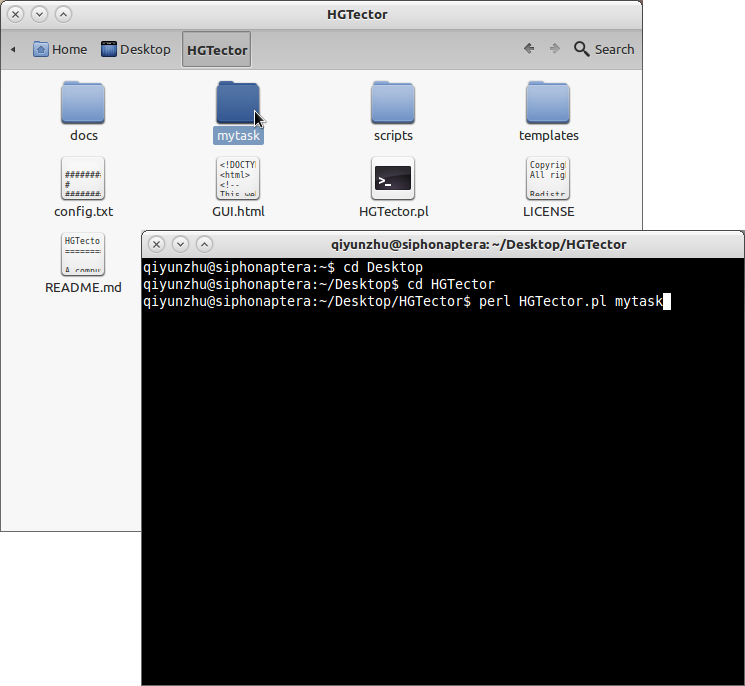
The whole process contains five steps: Blaster, Taxonomer, Purifier, Analyzer and Summarizer. It is recommended to run one step, observe the output, and then run the next step. To run an individual step (say, Blaster), type:
perl HGTector.pl mytask -BlasterYou may repeatedly run one step until you are satisfied with the output. The new output will overwrite the old ones.
Step 1: Blaster
This step performs all-against-all BLASTP of input proteins in batch mode.
You may either perform BLAST via http connection to the NCBI BLAST server (by default), or use standalone BLAST program on local BLAST databases, in which case, you need to download and install them. Please refer to this page for instructions.
The most important parameter at this step is the "number of hits to return" (nHit). It should allow sufficient sampling of BLAST hits for the genes. For single cellular eukaryotes, 100 hits may be enough; for most bacteria and archaea, 250-500 hits are recommended; for bacteria whose sister groups have been extensively sequenced (e.g., 500 E. coli genomes...), you may need more hits.
When the task starts, the status of individual BLAST searches will be displayed on screen. If multiple Blaster instances are running simultaneously, the ongoing Blaster instances and the number of completed BLASTs will be updated every ten minutes.
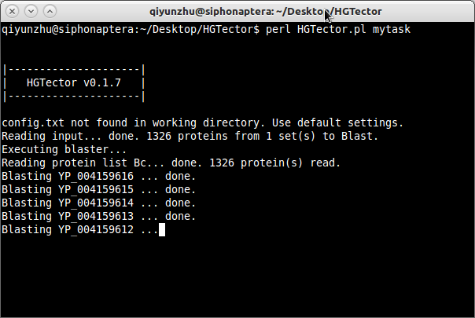
A "blast" folder will be created in the working directory. The folder will contain subfolders representing individual protein sets, and log files recording the status of individual BLAST searches. The BLAST results of individual proteins will be stored in the subfolders.
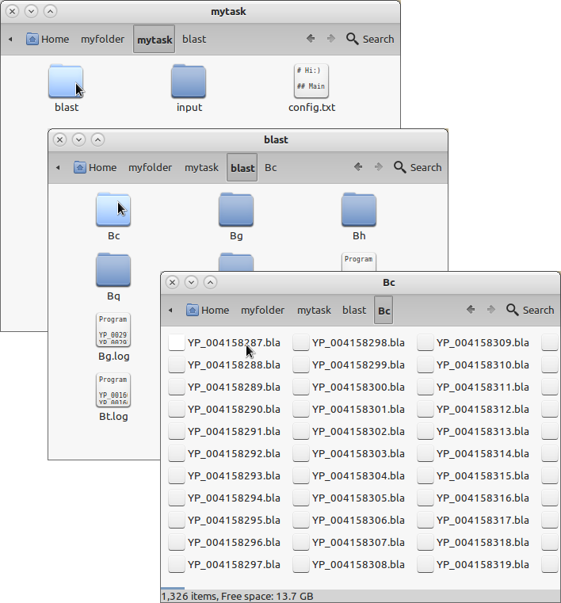
The BLAST results are saved in a NEXUS-like format (*.bla). It contains a basic information section, and a BLAST hit table section.
If you have switched on the "TaxBLAST" option (taxBlast=1), there will be an additional section, displaying the taxonomic tree of hits in an easy-to-read manner:
If you have switched on the "Retrieve sequences" (seqBlast=1) or "Retrieve multiple sequence alignments" (alnBlast=1) option, an additional section will store the sequences of hits in NEXUS format. Therefore, the whole file can be directly opened by sequence-editing programs, such as SeaView.
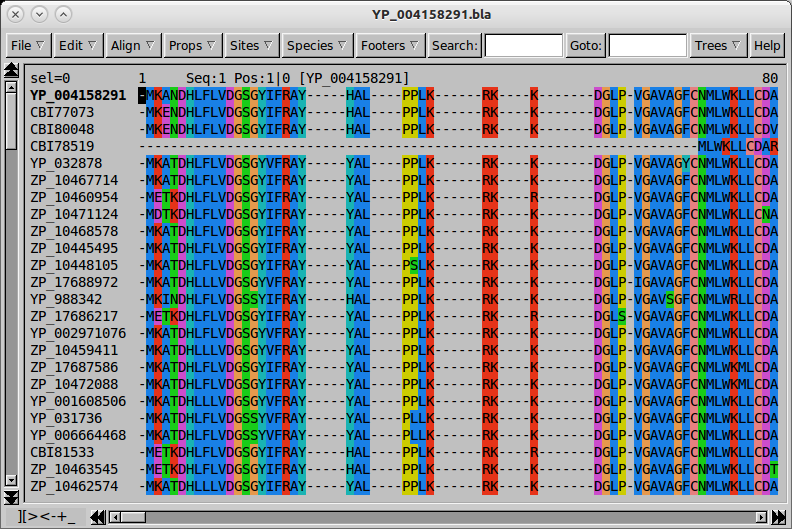
Be prepared that the BLAST results may consume a considerable amount of disk spaces (typically hundred of MB to several GB).
The batch BLASTP process may take hours to days, depending on the size of input protein sets. It can be halted at any time (accidentally or intentionally). A halted task can be resumed at any time by re-executing this step.
Step 2: Taxonomer
This step retrieves taxonomic information of all BLAST matches from the NCBI server. The information includes names and TaxIDs of designated taxonomic ranks. The process typically lasts for several to dozens of minutes.
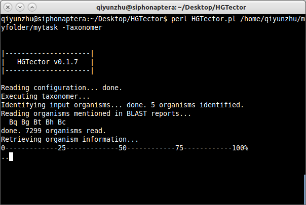
The result will be saved as three files: "taxa.db", "ranks.db" and "self.info" in a folder named "taxonomy" in the working directory.
Step 3: Purifier
This step is optional. It performs post-BLAST modifications to the BLAST reports. It includes a complete phylogenetics pipeline, which allows you to automatically build trees based on BLAST hits for each protein.
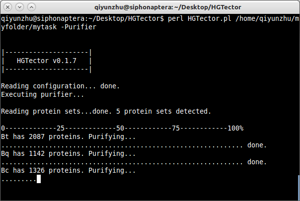
The resulting trees will be attached to each BLAST report in NEXUS format, too. Tip labels will be automatically translated into organism names. Therefore, the whole file can be directly viewed by tree-viewing programs, such as FigTree.
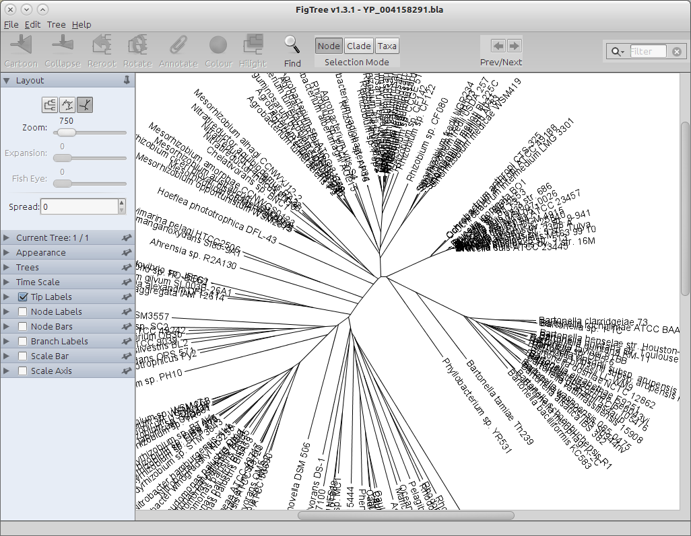
The amount of time this step takes varies, from 0 (if you skip this step) to weeks (if you want to build 10,000 deliberate maximum likelihood trees).
The sequence alignments and trees will not be used for subsequent analyses. They are just for you to verify prediction results, either by eyeballing the trees or by conducting further analyses of your preference.
Step 4: Analyzer
This is the most important step of HGTector. It does all statistical tricks to find out which genes may be HGT-derived. All the intermediate and final results will be saved in folder "result".
You may run this step for several times with different parameters until you get a satisfying result. (You don't have to re-run the previous three steps.)
First, you need to specify a grouping scenario, which defines the self, close and distal groups of organisms.
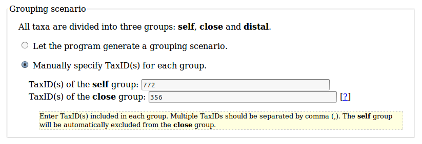
In brief, the self group contains all input genomes, and their immediate sister organisms. The close group contains sister groups of the self group, representing its vertical inheritance history. The distal group contains all other organisms, which are phylogenetically distant from the self group.
For example, if you are studying several human genomes, you may consider defining the self group as all humans (genus Homo, TaxID = 9605), the close group as all great apes (family Hominidae, TaxID = 9604) (except for humans), and the distal group as everything else.
Only gene flows from the distal group organisms to input genomes will be considered as putative HGT events.
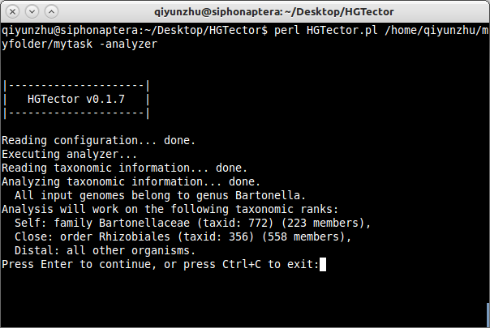
With a grouping scenario, the program will calculate the weight of BLAST hits of each group for each gene. For the whole genome(s), you will get three weight populations. They are defined as a "fingerprint" of the genome(s).
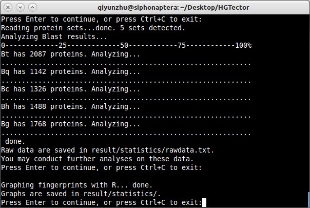
The raw data (including three weights per gene) are saved as "rawdata.txt" in "result/statistics/". If you are familiar with statistics, you are encouraged to play with the data by yourself.
If you have R installed, you may choose to graph the fingerprint (graphFp=1) as boxplot, histogram, density plot, and/or scatter plot. Here is an example:
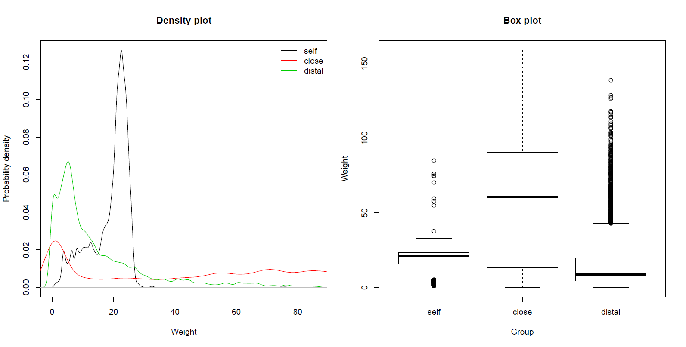
Based on the fingerprint, the program will conduct cluster analyses to isolate a subset of genes that are significantly more likely to be horizontally acquired, comparing to the rest of the genome(s).
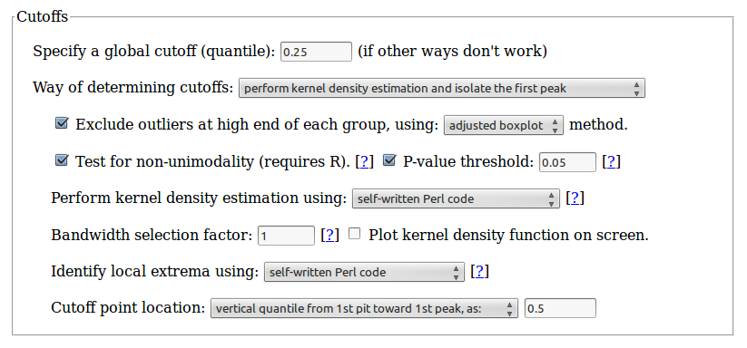
The results will be saved as tab-delimited text files in "result/detail/". Genes predicted to be HGT-derived will have a "1" in the "HGT" column.
As an alternative to this proposed new method, you may also conduct the conventional "bidirectional best match" method to predict HGT events, by switch on option BBH=1.
The whole step typically spends several minutes only.
Step 5: Summarizer
Now that you have the prediction results, it is time to summarize them in a human-readable manner. This step does the job. It generates reports in your choice of plain text, web page (HTML) and/or Excel spreadsheet formats.
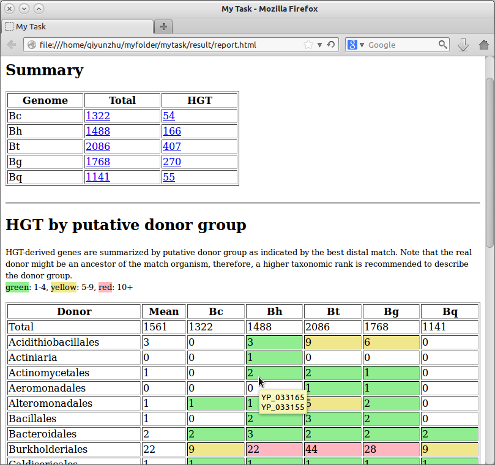
You have options to have the program summarize HGT-derived genes in three contexts: by putative donor group, by functional annotation, or by gene orthology.
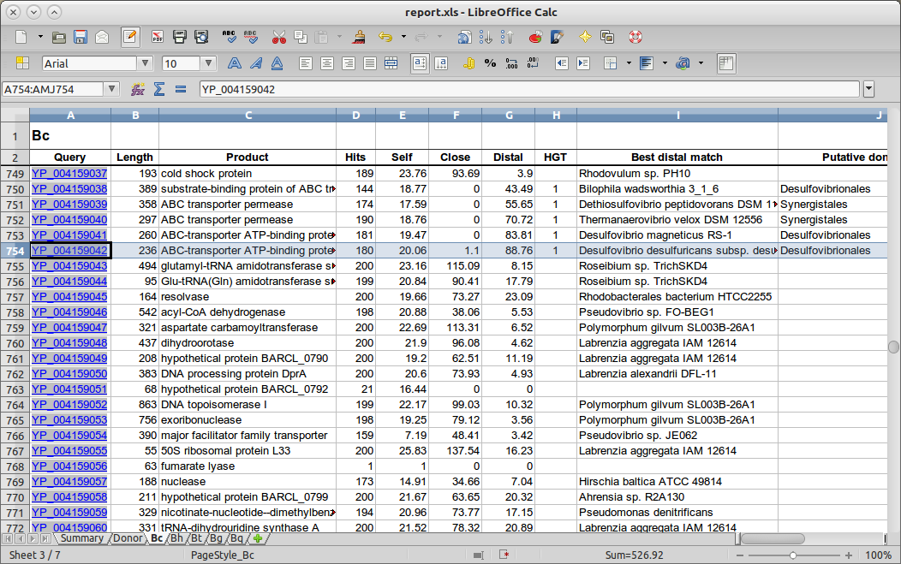
Please email us (qiyunzhu@gmail.com, katharinad@gmail.com) if you have any questions.
Last update: May 27, 2013